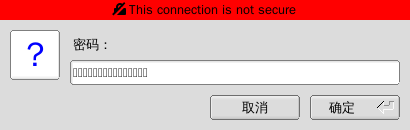

在archlinux安装配置VNC Server
目录
安装TigerVNC
sudo pacman -S tigervnc --noconfirm
启动VNC Server
直接运行 vncserver 会初始化一个配置文件,再此期间会提示你输入并确认登陆SVN Server的密码
[lujun9972@T520 ~]$ vncserver You will require a password to access your desktops. Password: Verify: Would you like to enter a view-only password (y/n)? y Password: Verify: New 'T520:1 (lujun9972)' desktop is T520:1 Creating default startup script /home/lujun9972/.vnc/xstartup Creating default config /home/lujun9972/.vnc/config Starting applications specified in /home/lujun9972/.vnc/xstartup Log file is /home/lujun9972/.vnc/T520:1.log
注意上面输出内容中的 T520:1,其后面的 :1 暗示了server监听的TCP端口为 5900+1=5901.
类似的，若你重新再运行一个 svnserver 实例
[lujun9972@T520 ~]$ vncserver New 'T520:2 (lujun9972)' desktop is T520:2 Starting applications specified in /home/lujun9972/.vnc/xstartup Log file is /home/lujun9972/.vnc/T520:2.log
则这个新实例监听的TCP端口为 5900+2=5902
也就是说，若实例的编号为 :X 则监听的端口为 5900+X
当然，在启动时，我们也可以直接指定编号，比如
[lujun9972@T520 .vnc]$ vncserver :4 New 'T520:4 (lujun9972)' desktop is T520:4 Starting applications specified in /home/lujun9972/.vnc/xstartup Log file is /home/lujun9972/.vnc/T520:4.log
通过systemd自动启动VNC Server
tigervnc安装后会有一个service模板单元，路径为 /usr/lib/systemd/system/vncserver.service,我们只需要通过它拷贝出一个实例，然后设置其中的 USER 参数即可
像这样:
sudo cp /usr/lib/systemd/system/vncserver.service /etc/systemd/system/vncserver@:1.service
sudo sed -i "/^User=/ s/$/$USER/" /etc/systemd/system/vncserver@:1.service
然后启用该service:
sudo systemctl daemon-reload sudo systemctl enable vncserver@:1.service
关闭VNC Server
使用 vncserver -kill :X 可以关闭指定编号的VNC Server
[lujun9972@T520 ~]$ vncserver -kill :2 Killing Xvnc process ID 10148
配置VNC Server
VNC Server的启动脚本
VNC Server 在启动时会运行 ~/.vnc/xstartup 来初始化图形环境.
默认VNC Server会查找并根据 /etc/X11/xinit/xinitrc 来初始化图形环境，我们可以修改下让它使用我们自己配置的图形环境.
只需要将 /etc/X11/xinit/xinitrc 改成 ~/.xinitrc 即可
unset SESSION_MANAGER unset DBUS_SESSION_BUS_ADDRESS OS=`uname -s` if [ $OS = 'Linux' ]; then case "$WINDOWMANAGER" in *gnome*) if [ -e /etc/SuSE-release ]; then PATH=$PATH:/opt/gnome/bin export PATH fi ;; esac fi if [ -x ~/.xinitrc ]; then exec ~/.xinitrc fi if [ -f ~/.xinitrc ]; then exec sh ~/.xinitrc fi
VNC Server的其他配置信息
~/.vnc/config 中则可以对VNC Server本身进行参数设置，比如我们可以配置一下分辨率
# securitytypes=vncauth,tlsvnc # desktop=sandbox geometry=1920x1080 # localhost # alwaysshared dpi=96
登陆VNC Server
直接运行 vncivew ${server}:${port},然后输入密码即可登陆VNC Server了

不过VNC协议是没有加密的，可能被嗅探，因此推荐通过SSH tunnel进行封装
ssh -L 5901:127.0.0.1:5901 -N -f -l ${username} ${server}
这样运行 vncview localhost:5901 就能通过SSH tunnel来登陆VNC Server了